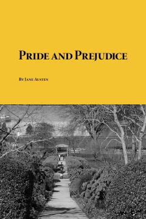

PAXIX asr Angliyasida sevgi, g'urur va ijtimoiy qadriyatlar haqidagi abadiy klassik roman.
Ushbu mashhur roman XIX asr Angliyasidagi ijtimoiy tabaqalanish, oilaviy munosabatlar va nikoh masalalarini o'ziga xos kinoya bilan tasvirlaydi. Asar bosh qahramoni Elizabet Bennet va boy janob Darsi o'rtasidagi murakkab munosabatlar orqali insoniy xato va tushunmovchiliklar yoritib beriladi.